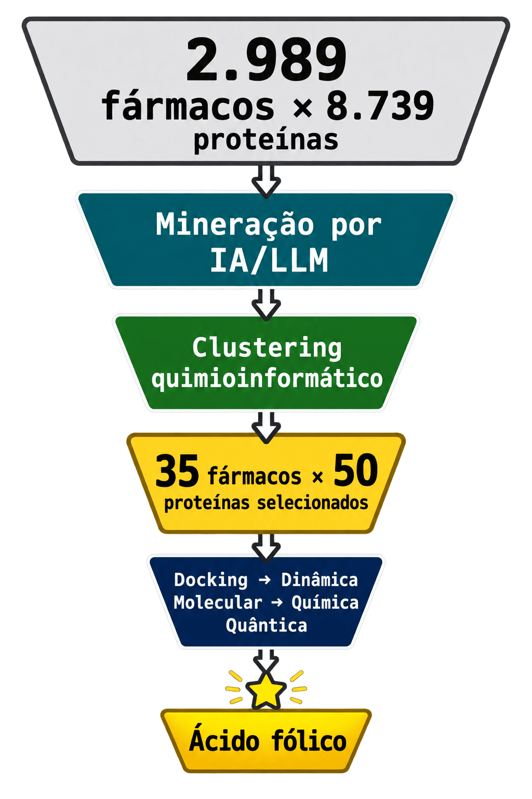
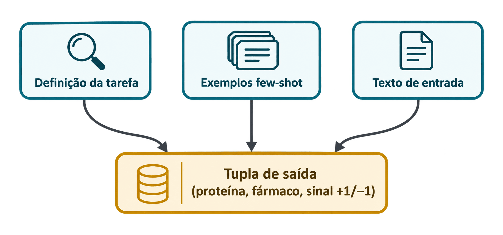
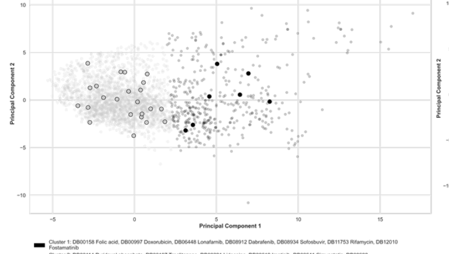
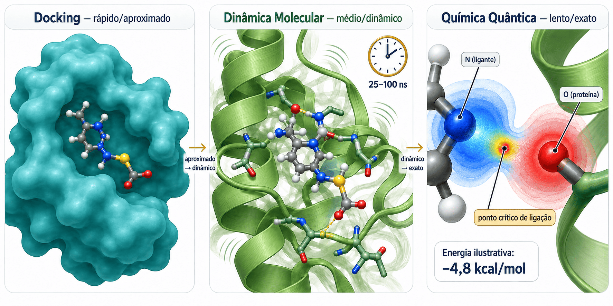
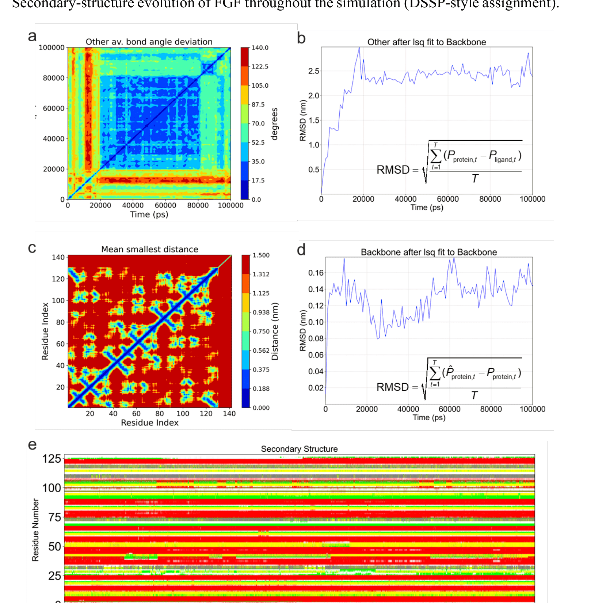
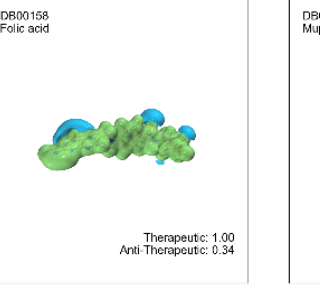
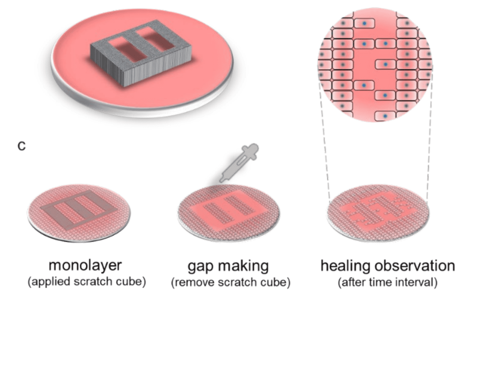
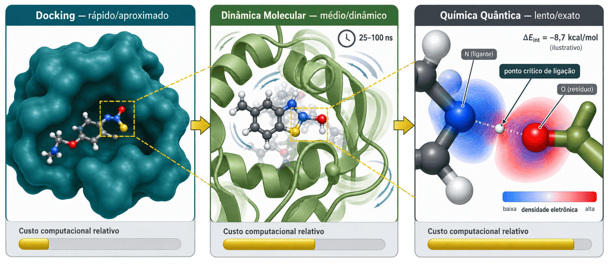

De quase 3 mil fármacos a um só candidato — em quatro filtros
O pipeline inteiro é um funil: cada etapa reduz o número de candidatos, mas aumenta a precisão do cálculo. É assim que se torna viável testar quase 9 mil proteínas sem precisar de laboratório físico em cada uma delas.1

img/pipeline-geral-funil.png
Diagrama de funil vertical, estilo infográfico editorial, fundo transparente. Do topo (mais largo) até a base (mais estreita), cinco faixas horizontais empilhadas, cada uma mais estreita que a anterior: "2.989 fármacos × 8.739 proteínas" (cinza-claro) → "Mineração por IA/LLM" (azul-petróleo) → "Clustering quimioinformático" (verde-musgo) → "35 fármacos × 50 proteínas selecionados" (dourado) → "Docking → Dinâmica Molecular → Química Quântica" (azul-marinho escuro) → base estreita "Ácido fólico" (destacado em dourado brilhante, com uma pequena coroa ou estrela). Setas finas verticais conectando cada faixa, números grandes e legíveis em cada uma, tipografia técnica monoespaçada.
Modelos de linguagem como "leitores automáticos" de evidência científica
Os pesquisadores usaram quatro modelos de linguagem — GPT-3.5-Turbo, GPT-4, LLaMA2-Chat-13B e PMC-LLaMA-13B (este último treinado especificamente em literatura biomédica) — para fazer duas tarefas específicas em cada artigo científico:1
- DisProtRD — dado uma proteína e um trecho de texto, decidir se aquela proteína está aumentada ou diminuída em pacientes com pé diabético, comparado a tecido saudável.
- ProtDrugRD — dado um fármaco e uma proteína, decidir se o fármaco ativa ou desativa aquela proteína, segundo o que o artigo relata.

img/llm-mining-arquitetura.png
Diagrama de fluxo horizontal simples, três caixas conectadas por setas: caixa 1 "Definição da tarefa" (ícone de lupa), caixa 2 "Exemplos few-shot" (ícone de três cartões empilhados), caixa 3 "Texto de entrada" (ícone de documento) — as três convergindo para uma caixa final maior "Tupla de saída (proteína, fármaco, sinal +1/−1)" em dourado. Estilo minimalista, linhas finas, paleta azul-petróleo e cinza, fundo transparente.
Para cada tarefa, o prompt segue uma estrutura fixa: definição da tarefa + exemplos "few-shot" (casos já resolvidos, mostrados como modelo) + o texto novo a ser analisado. Um passo intermediário de "extração de evidência" seleciona só as frases relevantes do artigo — e os autores destacam que essa seleção feita pela IA é mais precisa do que simplesmente buscar duas palavras-chave na mesma frase por expressão regular.1
Clustering quimioinformático: como escolher 35 fármacos que representem quase 3 mil

O problema: testar quimicamente 2.989 fármacos contra 8.739 proteínas seria computacionalmente inviável — são quase 26 milhões de combinações.
A solução: os pesquisadores usaram cinco técnicas diferentes de redução de dimensionalidade — MDS, t-SNE, UMAP, PCA e embedding espectral — para agrupar os fármacos por semelhança estrutural, testando de 2 a 9 grupos em cada técnica.1
Depois aplicaram "cobertura gulosa" (greedy coverage): um algoritmo que escolhe o menor número possível de representantes capaz de cobrir toda a diversidade estrutural do conjunto original — como escolher poucas cidades-amostra que ainda representem toda a variedade climática de um país.
Resultado desse filtro: de quase 3 mil fármacos, restaram 35 candidatos e 50 proteínas-chave — o suficiente para justificar o custo computacional bem mais alto da próxima etapa.1
Docking, dinâmica molecular e química quântica: três câmeras com zoom cada vez maior
Essa é a etapa mais cara computacionalmente — e por isso só chega até aqui quem sobreviveu aos dois filtros anteriores. As três técnicas não competem entre si: cada uma refina o resultado da anterior.

img/docking-md-qc-cascata.png
Ilustração em três painéis horizontais lado a lado, conectados por setas finas, representando um "zoom" cada vez mais próximo na mesma interação fármaco-proteína. Painel 1, rotulado "Docking — rápido/aproximado": uma molécula pequena (estilo bastão-e-esfera, cores CPK) encaixando em um bolso raso de uma forma azul-petróleo sólida e simplificada representando a proteína — sem detalhe de superfície, estilo esquemático rápido. Painel 2, rotulado "Dinâmica Molecular — médio/dinâmico": a mesma cena, mas agora a proteína é uma fita helicoidal detalhada em verde-musgo, com linhas de movimento sutis e onduladas ao redor sugerindo vibração ao longo do tempo, e um pequeno relógio ou contador "25-100 ns" no canto. Painel 3, rotulado "Química Quântica — lento/exato": zoom extremo apenas na região de contato entre um único átomo do fármaco e um resíduo da proteína, mostrando nuvens eletrônicas coloridas em gradiente azul-vermelho ao redor dos núcleos atômicos, com uma pequena marcação "ponto crítico de ligação" e um valor de energia em kcal/mol. Abaixo de cada painel, uma barra de progresso crescente indicando o custo computacional relativo (curta/dourada → média/dourada → longa/dourada). Setas finas conectando os três painéis da esquerda para a direita. Paleta consistente com o restante do infográfico: azul-petróleo, verde-musgo, dourado, fundo branco ou transparente, tipografia técnica pequena e legível nos rótulos.
1. Docking molecular
ProteinsPlus · DoGSite3 · JAMDAPrimeiro filtro físico: identifica os "bolsos" (pockets) da proteína onde um fármaco poderia se encaixar (DoGSite3) e testa diferentes poses de encaixe (JAMDA), selecionando as 10 melhores poses por par fármaco-proteína. É rápido, mas trata a proteína como praticamente rígida — uma aproximação grosseira.1
2. Dinâmica Molecular (MD)
GROMACS 2023 · Amber99SB-ildn · TIP3PSimula o comportamento do complexo fármaco-proteína ao longo do tempo — 25 nanossegundos de simulação (estendida a 100 ns quando necessário), em ambiente aquoso com temperatura (303 K) e pressão fisiológicas controladas. Isso captura flexibilidade que o docking estático não vê. Os pesquisadores checaram a estabilidade via RMSD (desvio da posição média) antes de aceitar o resultado como "equilibrado".1
3. Química Quântica (QC)
ORCA 5.0.4 · Gaussian 16 · MultiwfnA etapa mais precisa e mais cara: calcula a energia de ligação a partir do comportamento real dos elétrons na região de contato — não uma aproximação, mas a física quântica da ligação química em si. Só uma pequena "esfera" de átomos ao redor do ponto de contato entra no cálculo (íons a 6 Å, resíduos a 2,5–3,5 Å do fármaco), porque calcular a proteína inteira nesse nível seria computacionalmente inviável.1

Por que corrigir o "erro da régua"? (BSSE)
Quando dois pedaços de molécula são calculados juntos, cada um "empresta" um pouco da precisão matemática do outro — como se a régua usada para medir a distância entre dois objetos mudasse de tamanho dependendo se eles estão juntos ou separados. Esse artefato numérico se chama erro de superposição de base (BSSE), e os pesquisadores o corrigiram com a técnica de counterpoise correction: recalculam a energia de cada fragmento isolado usando o mesmo "conjunto de réguas" (base) do sistema completo, e subtraem essa diferença do resultado bruto.1
No caso do ácido fólico com o fator de crescimento de fibroblastos, a energia bruta foi de −80,71 kcal/mol; depois da correção de BSSE (+2,58 kcal/mol), o valor final publicado foi −78,13 kcal/mol — o número que aparece no resumo do artigo.1
O que os elétrons revelam ponto a ponto
Com uma ferramenta chamada Multiwfn, os pesquisadores localizaram os pontos críticos de ligação (BCP) — os pontos exatos onde a nuvem eletrônica de duas moléculas se encontra — e mediram a força de cada contato individual entre o ácido fólico e a proteína:1
| Contato químico | Densidade eletrônica | Energia de ligação |
|---|---|---|
| Ligante-O ··· Glutamina (mais forte) | 0,0488 | −10,15 kcal/mol |
| Ligante-N/H ··· Glutamato | 0,0293 | −5,80 kcal/mol |
| Ligante-O ··· Lisina (contato 1) | 0,0231 | −4,41 kcal/mol |
| Ligante-O ··· Lisina (contato 2) | 0,0230 | −4,38 kcal/mol |
| Ligante-H ··· Glutamato (mais fraco) | 0,0060 | −0,61 kcal/mol |
É essa soma de contatos individuais — alguns fortes, outros fracos — que constrói a energia total de ligação. O contato mais forte, com uma glutamina, sozinho já responde por boa parte da estabilidade do encaixe.1
Como comparar "a literatura disse que sim" com "a física calculou −78 kcal/mol"?
Aqui está um problema de engenharia sutil: o módulo de IA devolve apenas um sinal (+1 ou −1, "ativa" ou "desativa"), enquanto a química quântica devolve uma magnitude contínua em kcal/mol. São duas linguagens diferentes — uma discreta, outra numérica — que não podem ser somadas diretamente.1
A solução: normalizar as energias de interação com uma transformação SoftMax (que compara cada par relativamente a todos os outros pares calculados) seguida de um −log10(), de forma que interações mais fortes recebam pontuações positivas maiores.

Os pesos atribuídos revelam a filosofia do método: pares com evidência compartilhada (literatura + física concordando) recebem peso 5; pares com evidência só de literatura recebem peso 35 (mais informativo, mas menos rigoroso); pares com evidência só de física recebem peso 0,5 (rigoroso, mas isolado). Os autores testaram variações desses pesos e confirmaram que o candidato no topo — ácido fólico — não mudava.1
Ensaio de "risco na monocamada" (scratch assay): o teste que decide se a simulação valeu

O candidato apontado pela simulação foi testado de verdade: uma camada uniforme de células humanas (fibroblastos dérmicos — HDF — e queratinócitos — HaCaT) recebe um "risco" padronizado, e os pesquisadores fotografam a região a cada 24-96 horas para medir quanto da área aberta já foi recoberta por células migrando das bordas.1
Sete fármacos foram testados lado a lado com um grupo sem tratamento (controle): ácido fólico, ácido cólico, mupirocina, piridoxal fosfato, metformina, sinvastatina e aciclovir.
| Dia | Sem tratamento | Ácido fólico |
|---|---|---|
| Dia 1 | 27,9% fechado | 47,5% fechado |
| Dia 2 | 52,0% fechado | 86,9% fechado |
| Dia 3 | 69,7% fechado | 99,9% fechado |
Dados de fibroblastos dérmicos (HDF), Tabela S12 do material suplementar. As diferenças foram estatisticamente significativas em todos os pontos de checagem (múltiplos asteriscos nas figuras originais, indicando p<0,05 até p<0,0001).1
De 16-28 semanas para 5-7 semanas — sem pular etapas biológicas
O ganho não vem de "pular" a parte biológica (cultivo de células ainda leva o mesmo tempo que sempre levou), mas de comprimir drasticamente a parte que hoje é feita manualmente ou por tentativa-e-erro.1

img/eficiencia-tempo-grafico.png
Gráfico de barras horizontais, estilo editorial, fundo branco. Duas barras principais: a primeira, mais longa, rotulada "Fluxo convencional — 16 a 28+ semanas", em tom terracota; a segunda, bem mais curta, rotulada "Fluxo com IA + química computacional — 5 a 7 semanas", em verde-musgo. Cada barra subdividida internamente em três segmentos menores com bordas finas, representando as etapas "Triagem de literatura", "Geração de hipótese/simulação" e "Validação em células" — visualmente proporcionais ao tempo de cada etapa. Rótulo final destacado acima do gráfico: "Redução de 65-75% no tempo total". Tipografia técnica pequena nas legendas.
A aceleração veio de rodar as simulações em paralelo em infraestrutura de supercomputação — cerca de 24 GPUs A100 no NSCC de Singapura e 12 GPUs A40 na própria universidade, além de até 640 núcleos de CPU dedicados aos cálculos de química quântica. O cultivo celular (3-7 dias só para as células ficarem prontas para o ensaio) continua sendo o mesmo, biologicamente — é o único estágio que a tecnologia não consegue comprimir.1
Nenhuma das quatro técnicas sozinha teria chegado ao ácido fólico com essa confiança — foi a combinação de IA, estatística, física e biologia experimental, cada uma corrigindo o ponto cego da anterior.